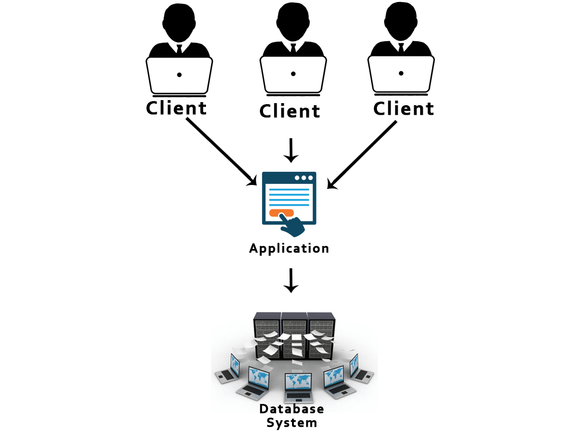
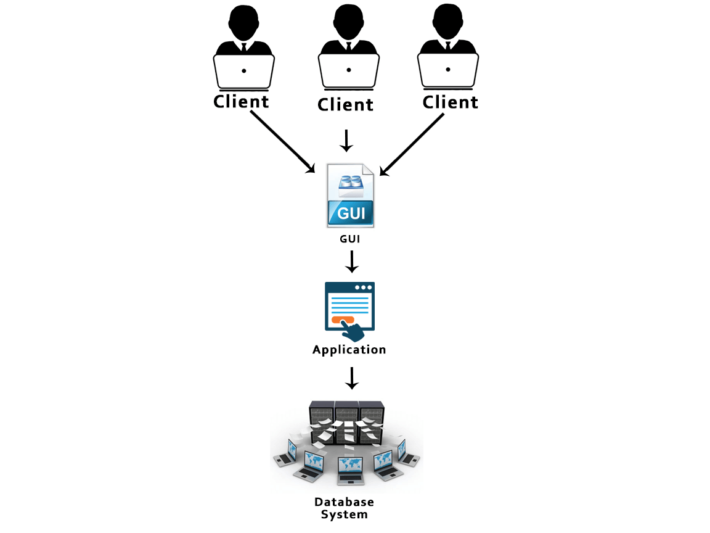

A list of top frequently asked DBMS interview questions and answers are given below.
DBMS is a collection of programs that facilitates users to create and maintain a database. In other words, DBMS provides us an interface or tool for performing different operations such as the creation of a database, inserting data into it, deleting data from it, updating the data, etc. DBMS is a software in which data is stored in a more secure way as compared to the file-based system. Using DBMS, we can overcome many problems such as- data redundancy, data inconsistency, easy access, more organized and understandable, and so on. There is the name of some popular Database Management System- MySQL, Oracle, SQL Server, Amazon simple DB (Cloud-based), etc.
Working of DBMS is defined in the figure below.
A Database is a logical, consistent and organized collection of data that it can easily be accessed, managed and updated. Databases, also known as electronic databases are structured to provide the facility of creation, insertion, updating of the data efficiently and are stored in the form of a file or set of files, on the magnetic disk, tapes and another sort of secondary devices. Database mostly consists of the objects (tables), and tables include of the records and fields. Fields are the basic units of data storage, which contain the information about a particular aspect or attribute of the entity described by the database. DBMS is used for extraction of data from the database in the form of the queries.
The collection of database and DBMS software together is known as a database system. Through the database system, we can perform many activities such as-
The data can be stored in the database with ease, and there are no issues of data redundancy and data inconsistency.
The data will be extracted from the database using DBMS software whenever required. So, the combination of database and DBMS software enables one to store, retrieve and access data with considerate accuracy and security.
PROJECTION and SELECTION are the unary operations in relational algebra. Unary operations are those operations which use single operands. Unary operations are SELECTION, PROJECTION, and RENAME.
As in SELECTION relational operators are used for example - =,<=,>=, etc.
RDBMS stands for Relational Database Management Systems. It is used to maintain the data records and indices in tables. RDBMS is the form of DBMS which uses the structure to identify and access data concerning the other piece of data in the database. RDBMS is the system that enables you to perform different operations such as- update, insert, delete, manipulate and administer a relational database with minimal difficulties. Most of the time RDBMS use SQL language because it is easily understandable and is used for often.
There are four types of database languages:
The Data model is specified as a collection of conceptual tools for describing data, data relationships, data semantics and constraints. These models are used to describe the relationship between the entities and their attributes.
There is the number of data models:
The degree of relation is a number of attribute of its relation schema. A degree of relation is also known as Cardinality it is defined as the number of occurrence of one entity which is connected to the number of occurrence of other entity. There are three degree of relation they are one-to-one(1:1), one-to-many(1:M), many-to-one(M:M).
The Relationship is defined as an association among two or more entities. There are three type of relationships in DBMS-
One-To-One: Here one record of any object can be related to one record of another object.
One-To-Many (many-to-one): Here one record of any object can be related to many records of other object and vice versa.
Many-to-many: Here more than one records of an object can be related to n number of records of another object.
Data abstraction in DBMS is a process of hiding irrelevant details from users. Because database systems are made of complex data structures so, it makes accessible the user interaction with the database.
For example: We know that most of the users prefer those systems which have a simple GUI that means no complex processing. So, to keep the user tuned and for making the access to the data easy, it is necessary to do data abstraction. In addition to it, data abstraction divides the system in different layers to make the work specified and well defined.
Following are three levels of data abstraction:
Physical level: It is the lowest level of abstraction. It describes how data are stored.
Logical level: It is the next higher level of abstraction. It describes what data are stored in the database and what the relationship among those data is.
View level: It is the highest level of data abstraction. It describes only part of the entire database.
For example- User interacts with the system using the GUI and fill the required details, but the user doesn't have any idea how the data is being used. So, the abstraction level is entirely high in VIEW LEVEL.
Then, the next level is for PROGRAMMERS as in this level the fields and records are visible and the programmers have the knowledge of this layer. So, the level of abstraction here is a little low in VIEW LEVEL.
And lastly, physical level in which storage blocks are described.
Data Definition Language (DDL) is a standard for commands which defines the different structures in a database. Most commonly DDL statements are CREATE, ALTER, and DROP. These commands are used for updating data into the database.
Data Manipulation Language (DML) is a language that enables the user to access or manipulate data as organized by the appropriate data model. For example- SELECT, UPDATE, INSERT, DELETE.
There is two type of DML:
Procedural DML or Low level DML: It requires a user to specify what data are needed and how to get those data.
Non-Procedural DML or High level DML: It requires a user to specify what data are needed without specifying how to get those data.
The DML Compiler translates DML statements in a query language that the query evaluation engine can understand. DML Compiler is required because the DML is the family of syntax element which is very similar to the other programming language which requires compilation. So, it is essential to compile the code in the language which query evaluation engine can understand and then work on those queries with proper output.
Once the DBMS informs the user that a transaction has completed successfully, its effect should persist even if the system crashes before all its changes are reflected on disk. This property is called durability. Durability ensures that once the transaction is committed into the database, it will be stored in the non-volatile memory and after that system failure cannot affect that data anymore.
Normalization is a process of analysing the given relation schemas according to their functional dependencies. It is used to minimize redundancy and also used to minimize insertion, deletion and update distractions. Normalization is considered as an essential process as it is used to avoid data redundancy, insertion anomaly, updation anomaly, deletion anomaly.
There most commonly used normal forms are:
Denormalization is the process of boosting up database performance and adding of redundant data which helps to get rid of complex data. Denormalization is a part of database optimization technique. This process is used to avoid the use of complex and costly joins. Denormalization doesn't refer to the thought of not to normalize instead of that denormalization takes place after normalization. In this process, firstly the redundancy of the data will be removed using normalization process than through denormalization process we will add redundant data as per the requirement so that we can easily avoid the costly joins.
Functional Dependency is the starting point of normalization. It exists when a relation between two attributes allow you to determine the corresponding attribute's value uniquely. The functional dependency is also known as database dependency and defines as the relationship which occurs when one attribute in a relation uniquely determines another attribute. It is written as A->B which means B is functionally dependent on A.
E-R model is a short name for the Entity-Relationship model. This model is based on the real world. It contains necessary objects (known as entities) and the relationship among these objects. Here the primary objects are the entity, attribute of that entity, relationship set, an attribute of that relationship set can be mapped in the form of E-R diagram.
In E-R diagram, entities are represented by rectangles, relationships are represented by diamonds, attributes are the characteristics of entities and represented by ellipses, and data flow is represented through a straight line.
The Entity is a set of attributes in a database. An entity can be a real-world object which physically exists in this world. All the entities have their attribute which in the real world considered as the characteristics of the object.
For example: In the employee database of a company, the employee, department, and the designation can be considered as the entities. These entities have some characteristics which will be the attributes of the corresponding entity.
An attribute refers to a database component. It is used to describe the property of an entity. An attribute can be defined as the characteristics of the entity. Entities can be uniquely identified using the attributes. Attributes represent the instances in the row of the database.
For example: If a student is an entity in the table then age will be the attribute of that student.
Extension: The Extension is the number of tuples present in a table at any instance. It changes as the tuples are created, updated and destroyed. The actual data in the database change quite frequently. So, the data in the database at a particular moment in time is known as extension or database state or snapshot. It is time dependent.
Intension: Intension is also known as Data Schema and defined as the description of the database, which is specified during database design and is expected to remain unchanged. The Intension is a constant value that gives the name, structure of tables and the constraints laid on it.
Data independence specifies that "the application is independent of the storage structure and access strategy of data." It makes you able to modify the schema definition at one level without altering the schema definition in the next higher level.
It makes you able to modify the schema definition in one level should not affect the schema definition in the next higher level.
There are two types of Data Independence:
Physical Data Independence: Physical data is the data stored in the database. It is in the bit-format. Modification in physical level should not affect the logical level.
For example: If we want to manipulate the data inside any table that should not change the format of the table.
Logical Data Independence: Logical data in the data about the database. It basically defines the structure. Such as tables stored in the database. Modification in logical level should not affect the view level.
For example: If we need to modify the format of any table, that modification should not affect the data inside it.
1NF is the First Normal Form. It is the simplest type of normalization that you can implement in a database. The primary objectives of 1NF are to:
2NF is the Second Normal Form. A table is said to be 2NF if it follows the following conditions:
3NF stands for Third Normal Form. A database is called in 3NF if it satisfies the following conditions:
BCMF stands for Boyce-Codd Normal Form. It is an advanced version of 3NF, so it is also referred to as 3.5NF. BCNF is stricter than 3NF.
A table complies with BCNF if it satisfies the following conditions:
ACID properties are some basic rules, which has to be satisfied by every transaction to preserve the integrity. These properties and rules are:
ATOMICITY: Atomicity is more generally known as ?all or nothing rule.' Which implies all are considered as one unit, and they either run to completion or not executed at all.
CONSISTENCY: This property refers to the uniformity of the data. Consistency implies that the database is consistent before and after the transaction.
ISOLATION: This property states that the number of the transaction can be executed concurrently without leading to the inconsistency of the database state.
DURABILITY: This property ensures that once the transaction is committed it will be stored in the non-volatile memory and system crash can also not affect it anymore.
DELETE command: DELETE command is used to delete rows from a table based on the condition that we provide in a WHERE clause.
TRUNCATE command: TRUNCATE command is used to remove all rows (complete data) from a table. It is similar to the DELETE command with no WHERE clause.
The 2-Tier architecture is the same as basic client-server. In the two-tier architecture, applications on the client end can directly communicate with the database at the server side.
The 3-Tier architecture contains another layer between the client and server. Introduction of 3-tier architecture is for the ease of the users as it provides the GUI, which, make the system secure and much more accessible. In this architecture, the application on the client-end interacts with an application on the server which further communicates with the database system.
 Shared lock: Shared lock is required for reading a data item. In the shared lock, many transactions may hold a lock on the same data item. When more than one transaction is allowed to read the data items then that is known as the shared lock.
Exclusive lock: When any transaction is about to perform the write operation, then the lock on the data item is an exclusive lock. Because, if we allow more than one transaction then that will lead to the inconsistency in the database.
There are following types of keys:
Primary key: The Primary key is an attribute in a table that can uniquely identify each record in a table. It is compulsory for every table.
Candidate key: The Candidate key is an attribute or set of an attribute which can uniquely identify a tuple. The Primary key can be selected from these attributes.
Super key: The Super key is a set of attributes which can uniquely identify a tuple. Super key is a superset of the candidate key.
Foreign key: The Foreign key is a primary key from one table, which has a relationship with another table. It acts as a cross-reference between tables.
You have to use Structured Query Language (SQL) to communicate with the RDBMS. Using queries of SQL, we can give the input to the database and then after processing of the queries database will provide us the required output.